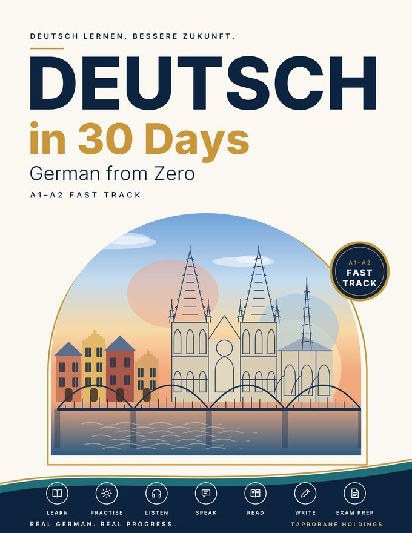

Quick Start & Workbooks · Fast track
German in 30 Days
A1–A2 Fast Track for Adult Beginners. A 30-day fast track from your first word to A1–A2 for busy adult beginners: one short daily lesson, free audio for 24 lessons via QR code, a spaced-review calendar and a mistake tracker.
A1·A2232 pagesColour paperbackPaperback & KindleKindle Unlimited
Kindle eBookPaperbackOpens your own Amazon store — change it in the menu. The Kindle edition is in Kindle Unlimited.
Who it's for
Is this your book?
Busy adult beginners who want a quick, structured start in 30 days before going deeper.
Not sure? Take the level testInside the book
What you get
- 30 daily lessons, one step at a time
- Free audio for 24 lessons — scan the QR code
- “Words you already know” — a head start from English
- Spaced-review calendar and mistake tracker
Next step
Keep going after this book
Ready for more? Continue with the full course: Deutsch A1 → A2 → B1 → B2.
Free audio for this book
Listen to 24 lessons — scan the QR code in the book or open the audio page.
Also useful: Der, Die, Das Workbook
Master der, die, das and the four cases — rules, drills and a full answer key.